Forex Market Foundation 3 — Infrastructure
Who really moves the FX market, who owns the plumbing, and why the retail broker is built to profit when you lose.
The $5 trillion-a-day FX market runs on a hierarchy: fundamental participants (corporates, funds, central banks) route real flow through investment and retail banks, while retail traders speculate through brokers engineered against them. Only ~20% of daily volume is real economic flow; ~80% is speculation. Understand the infrastructure and you understand the limits of what you can and cannot do.
The gist
- The FX market averages about $5 trillion of transactions per day; it opens in New Zealand at 5pm EST Sunday and closes 5pm EST Friday (10pm Sunday to 10pm Friday London time).
- Only ~20% of volume (~$1 trillion/day) is real economic/business flow; ~80% (~$4 trillion/day) is pure speculation — hedge funds, IB prop desks and retail traders.
- 90% of retail traders lose money trading forex; the 90/90/90 stat: 90% of retail traders lose 90% of their margin within 90 days.
- Corporate hedging case studies: Sapporo Semiconductor (exporter) hedges a 1yr USD/JPY forward at Sumitomo Mitsui — sell $110,000,000 / buy 13,200,000,000 JPY, locking ~$22M; Megacom (importer) hedges at Morgan Stanley — sell $85,000,000 / buy 10,200,000,000 JPY, locking $17M.
- Investment banks quote large clients spreads as tight as ~1 pip with little/no commission; retail banks charge SMEs and retail clients 1%–5% spreads (more for exotics) plus a processing fee.
- Broker revenue = OTC Gain + Spread + Commission + Finance Turn; a broker borrows a credit line (e.g. $250m at ~2.5%) and lends leverage to clients (e.g. ~3.5%), keeping the turn — funded by the client's own collateral.
- A-Book / B-Book: the broker hedges winning clients out but runs losing clients' OTC positions naked (no hedge), so it takes the other side and profits when you lose — you trade against your own broker.
- Forex margin is typically 1% in Europe/Asia = 100x leverage; a $100,000 position needs only $1,000 margin, so a 1% adverse move wipes out a $1,000 initial margin. US/Canada banned CFDs in 2010 and require far more margin.
- Central banks drive FX via direct intervention (foreign reserves), the classic money-supply lever (M2, the money multiplier M2/M0, fractional-reserve banking), and non-classic QE; governments use import/export tariffs. Money flows from the 'dumb money' to the 'smart money' via the FX market.
The participant hierarchy and the FX plumbing
- Fundamental participants: businesses & corporations, and pension funds & hedge funds — they transact for genuine economic and business reasons.
- Owners of the infrastructure: investment banks, retail banks and retail brokers — the venues everyone else must transact through.
- Central banks and governments are a distinct group: they intervene for political and stabilisation reasons, not fundamental business reasons.
- Retail traders (individuals) are grouped with retail brokers, and their participation is entirely different from the fundamental players.
Understanding the infrastructure means understanding the parameters of the industry — what you can and cannot do. The participants trade for reasons; the banks and brokers own the pipes; central banks and governments react.
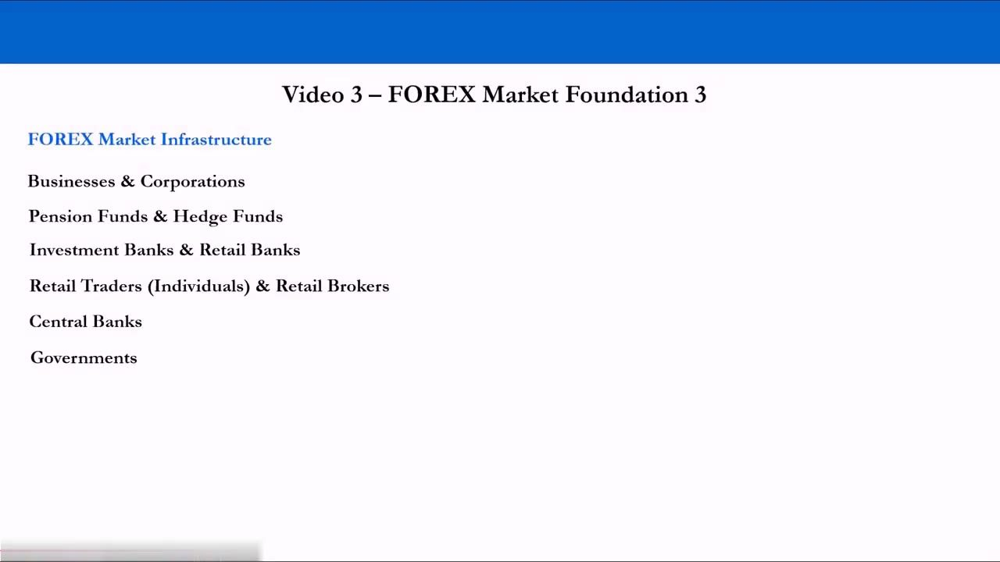
The size of the market: $5 trillion a day
- About $5 trillion of transactions per day — a hugely traded market.
- Opens in New Zealand at 5pm EST Sunday, closes 5pm EST Friday; on London time that's 10pm Sunday to 10pm Friday.
- Broker marketing ('never closes', 'most liquid', 'limitless low-risk profit') is a sales pitch, not the truth.
- Only ~20% (~$1 trillion/day) is real economic flow; ~80% (~$4 trillion/day) is speculation.
London is effectively the capital of FX because its time zone spans Asian, European and US hours. The advertised limitless-opportunity narrative is a marketing hook, not reality.
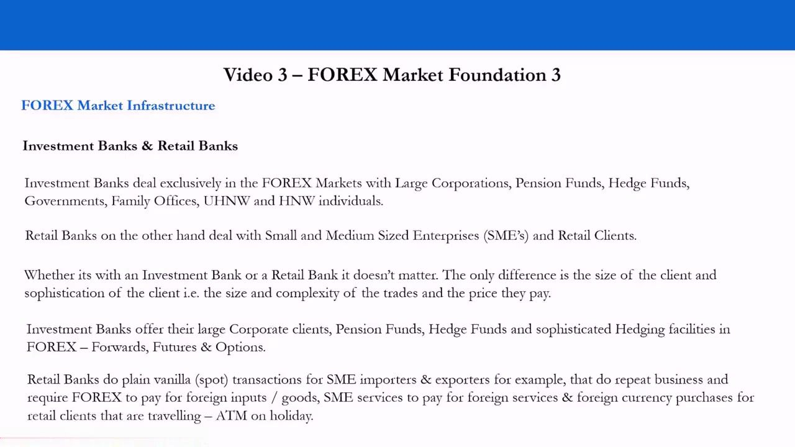
Exporters: the Sapporo Semiconductor case
- Sapporo is a Japanese tech firm selling DDR SDRAM chips to US PC makers; 100% of sales are received in USD while its costs are in JPY.
- If USD/JPY falls from 120 to 100, sales translate from 15.6bn JPY down to 13bn JPY — margin drops from 56% to 30%, a 46% fall.
- The predicted local-currency loss is ~2.6bn JPY, about $21.6M.
- Investors will sell a publicly-traded exporter's stock as the currency turns — linking FX and the stock market.
An exporter earning foreign currency but paying local costs gets squeezed when its home currency strengthens — the margin can collapse quickly and overnight make the firm globally uncompetitive.
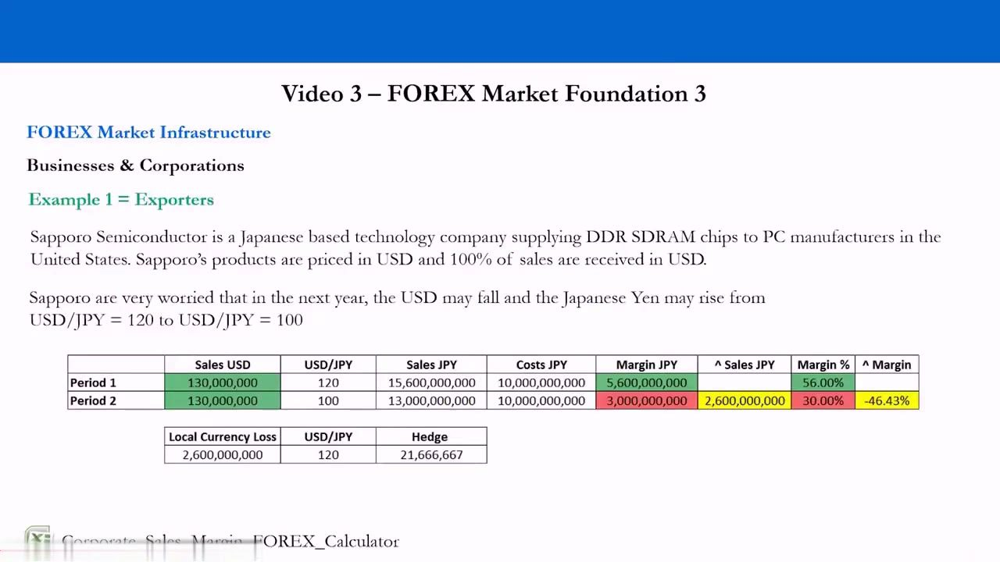
Hedging the exporter with a 1-year forward
- Sapporo hedges via a 1-year forward through a 10% corporate margin FX account at Sumitomo Mitsui Financial Group.
- They sell $110,000,000 and buy 13,200,000,000 JPY close to the current spot rate (1 USD = 120 JPY), posting ~$11M margin.
- If USD/JPY reaches 100, they unwind receiving $132,000,000, locking a profit of about $22M.
- That profit wipes out the local-currency loss and the exchange-rate hit to reported sales and margin.
Hedging forward eliminates the currency move's impact on the business. There is no rule forcing corporates to hedge, which is precisely why FX and equity valuations are inherently linked.
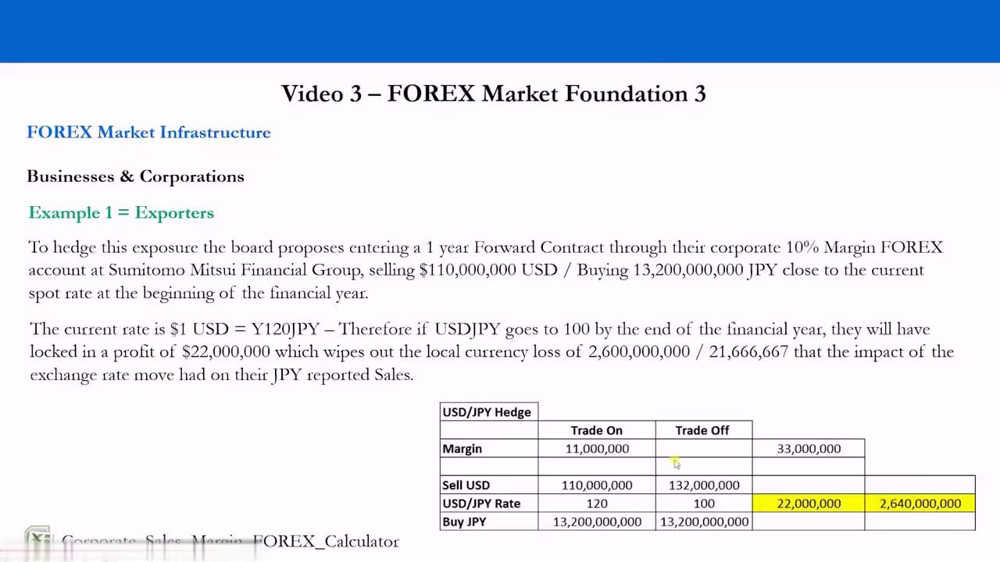
Importers: the Megacom case and its hedge
- Megacom is a US PC maker importing chips from Japan; 100% of its costs are denominated in JPY.
- If USD/JPY falls from 120 to 100, costs rise from $83.3M to $100M and margin falls from $66.6M to $50M — a 25% margin fall.
- To hedge, the board enters a 1-year forward through a 10% corporate margin FX account at Morgan Stanley: sell $85,000,000 / buy 10,200,000,000 JPY.
- Posting $8.5M margin and unwinding at 100 yields a $17M profit (~2bn JPY), hedging out the entire hit to costs and margin.
The importer is the mirror image of the exporter — it pays in a foreign currency, so a weakening home currency erodes purchasing power. The same forward-contract mechanic neutralises the exposure. At country level, a net exporter is hurt by a higher rate and a net importer by a lower one.
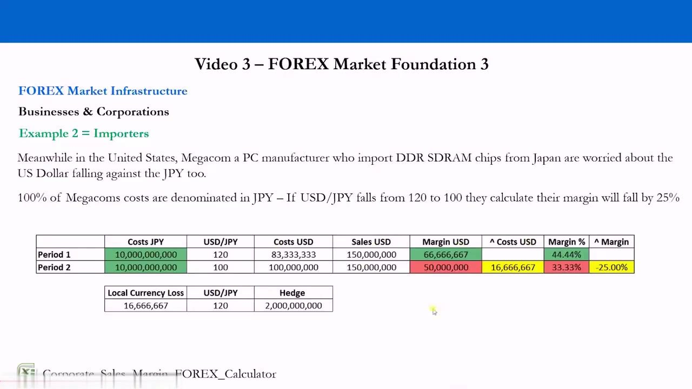
Pension funds and hedge funds as participants
- To invest in a foreign stock or bond, a fund must first buy the local currency, so the exchange rate matters over the life of the investment.
- A 20% equity gain can be entirely cancelled if the currency moves 20% the wrong way on the way out — so funds can hedge like corporates.
- There is an inherent, slow-moving correlation between a country's currency, its stock market and its bond market.
- Risk-on: sell USD, buy rest-of-world currencies, equities and debt; risk-off: the reverse — playable over 1-, 3- and 12-month horizons.
Funds trade in and out of liquid USD majors and index futures with billions of exposure very quickly, so their hedging can make big FX moves between major trading partners almost self-fulfilling.
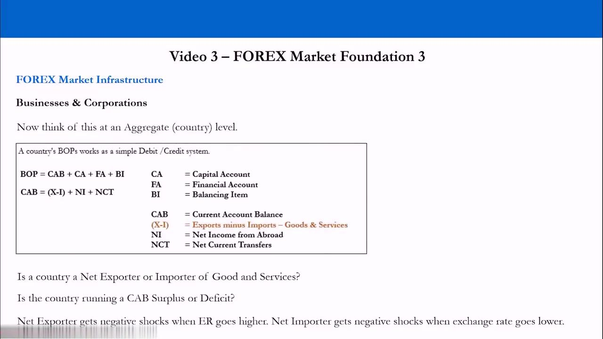
Global macro speculation
- Global macro funds hold speculative long/short currency positions as part of their strategy.
- These take the form of spot cash, leveraged synthetic CFDs, big liquid futures, and sometimes illiquid options.
- Crucially their speculation is predicated on fundamental drivers and forecasts of what the major participants will do.
- This is the same systematic, fundamentals-first approach the course builds toward later.
Hedge-fund speculation is fundamentally different from retail speculation: it is research-driven, longer-horizon, and grounded in a forecast of future participant behaviour — not a line moving on a chart.
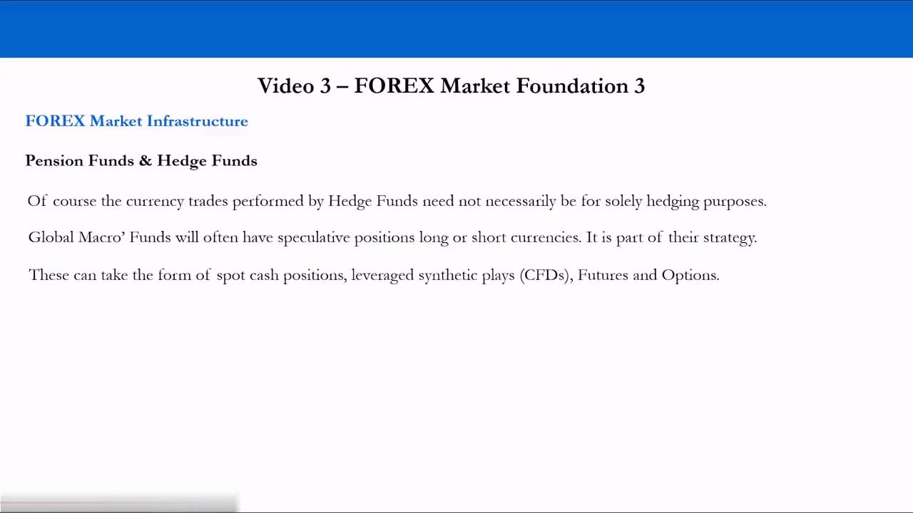
Investment banks vs retail banks
- Investment banks deal exclusively with large corporates, pension funds, hedge funds, governments, family offices and UHNW/HNW individuals.
- Retail banks serve SMEs and retail clients with plain-vanilla spot transactions.
- Retail bank spreads on liquid dollar crosses run 1%–5% (more for exotics) plus a large processing fee, all done risk-free on an agency basis.
- Investment-bank client spreads are typically the prevailing market rate — as little as 1 pip — with little or no commission; IBs also deal on risk, taking the other side to provide liquidity then trading out.
The bigger, more sophisticated and more frequent a trader, the less they pay. Almost all genuine fundamental FX business flows through investment banks and retail banks — the real economic 20%.
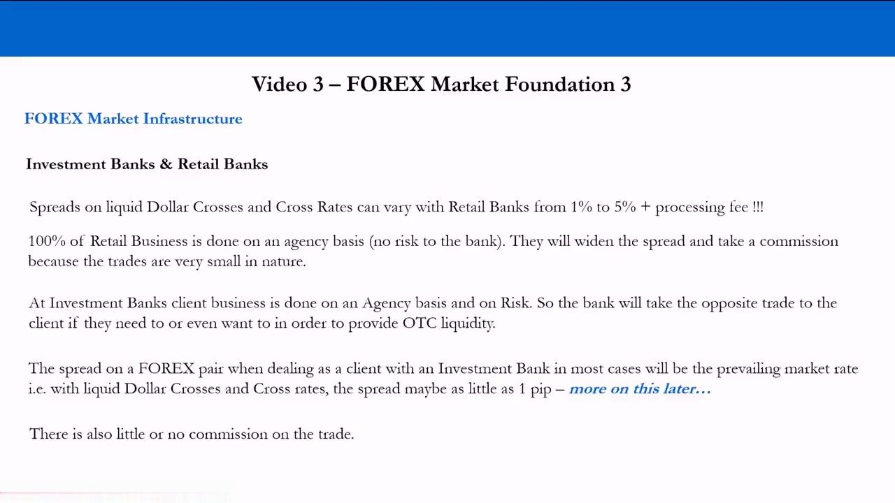
The 90/90/90 problem
- 90/90/90: 90% of retail traders lose 90% of their money within 90 days — across all asset classes, and even higher in forex.
- Retail traders speculate for no economic reason, typically buying and selling charts on technicals alone.
- They also react to backward-looking economic numbers (e.g. the US jobs number) instead of predicting the future.
- Professional traders take the opposite approach — using fundamental drivers to predict what participants will do 1, 3 and 12 months out.
The 90/90/90 phenomenon is the defining statistic of the retail brokerage industry. It exists because retail traders use backward-looking information while professionals forecast forward.
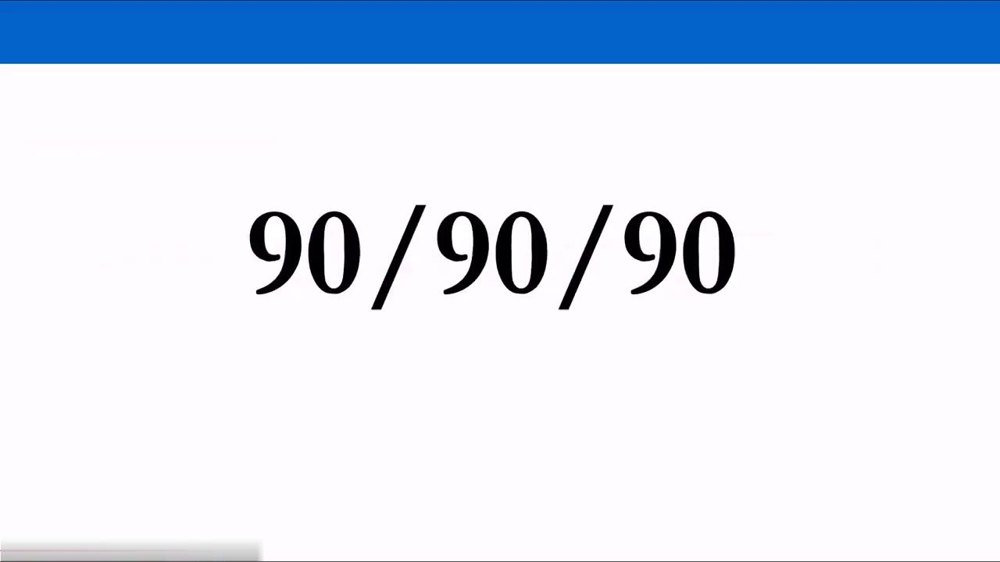
Professional vs retail: two opposite approaches
- Professional approach: long/short portfolio over a 1–3 month horizon, ~80% fundamental / 20% technical.
- Professionals run 20–30 diverse long/short positions at ~3–4% position size, with a volatility cap (e.g. 12%) targeting a higher return (e.g. 18%).
- Retail approach: directional 'day trading', concentrated risk (often ~3 positions), confusing market-making with portfolio management.
- Hedge funds stay in business by meeting a risk/return mandate, not by beating the market.
The imagined trader shouting on a floor at hundreds of trades a day was market-making, not proprietary trading. Real fiduciary trading is diversified, long/short and slow — capital preservation and growth, not the retail path to capital destruction.
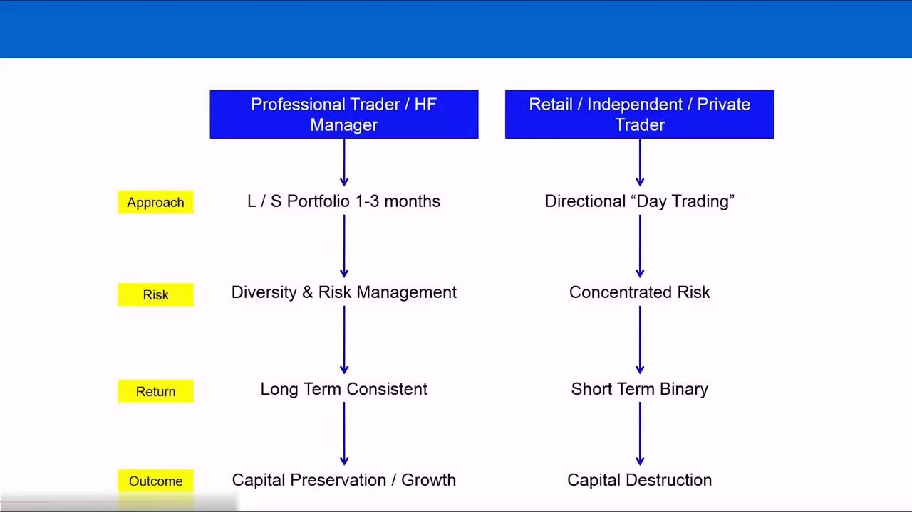
Expectations and the broker's business model
- Professionals set realistic targets, aim to get rich slowly, and generally meet them — they intend to trade until retirement.
- Retail traders carry unrealistically high targets and a lottery / get-poor-or-stay-poor mentality that is rarely met.
- Investment banks (Goldman Sachs, Morgan Stanley, Bank of America Merrill Lynch) survive centuries because they benefit when clients make money.
- Retail brokers benefit only short-term: with 80–95% of clients down at any time, they must constantly replace blown-up clients via heavy marketing.
The retail broker is a merry-go-round: 30% of clients may close accounts each month, so new deposits replace the losers. That is the polar opposite of how investment banks serve funds who make money and stay.
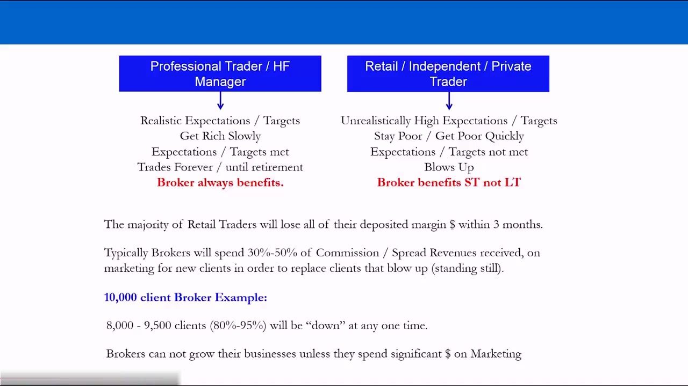
Margin, leverage and CFDs
- Margin is the cash you deposit as collateral to borrow (leverage) when trading CFDs or spread bets — a derivative that mirrors the underlying.
- Initial margin is the deposit; variable margin is what's used against open positions; utilised margin is the slice actually consumed by a move.
- Forex is typically 1% margin in Europe/Asia = 100x leverage: a $100,000 position needs $1,000, so a 1% adverse move wipes a $1,000 initial margin.
- CFDs were banned in the US and Canada in 2010 because clients over-leveraged; US/Canada now require far more margin (often ~20–30% until a track record is built).
On CFDs/spread bets you don't own the underlying — you own a contract whose value the broker settles daily (a 'contract for difference'). Extreme leverage is exactly how retail accounts blow up fast.
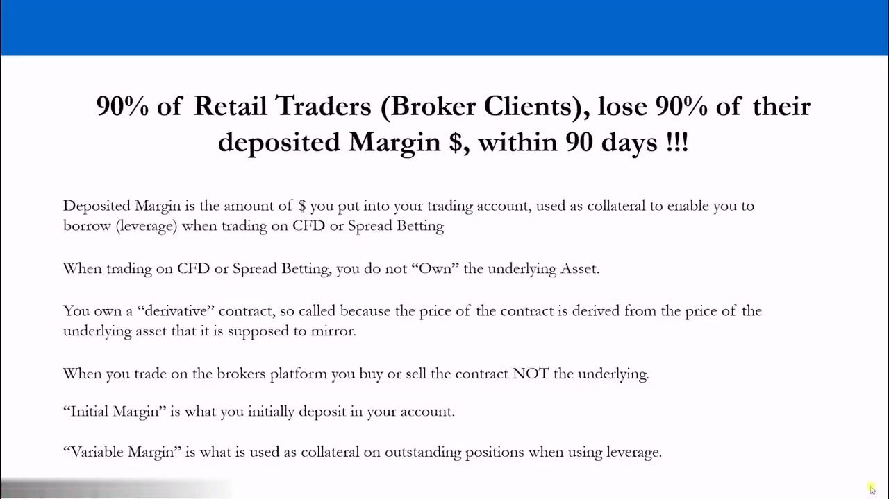
How the broker actually profits: financing turn
- Broker revenue = OTC Gain + Spread + Commission + Finance Turn (in FX, spread and commission are effectively the same).
- Financing example: agree a credit line borrowing up to $250m at 2.5% per annum, then offer leverage to clients at ~3.5% — keeping the ~1% turn.
- The credit is negotiated using the retail trader's own collateral, so the broker carries no risk; the creditor's dollars are at risk and the trader is stopped out when their margin is gone.
- Brokers are incentivised by volume and size — they want you to trade as often and as large as possible.
The client sponsors the broker: your deposit funds the credit line the broker then uses against you. Prefer STP/ECN agency brokers where the broker doesn't take the other side of your trades.
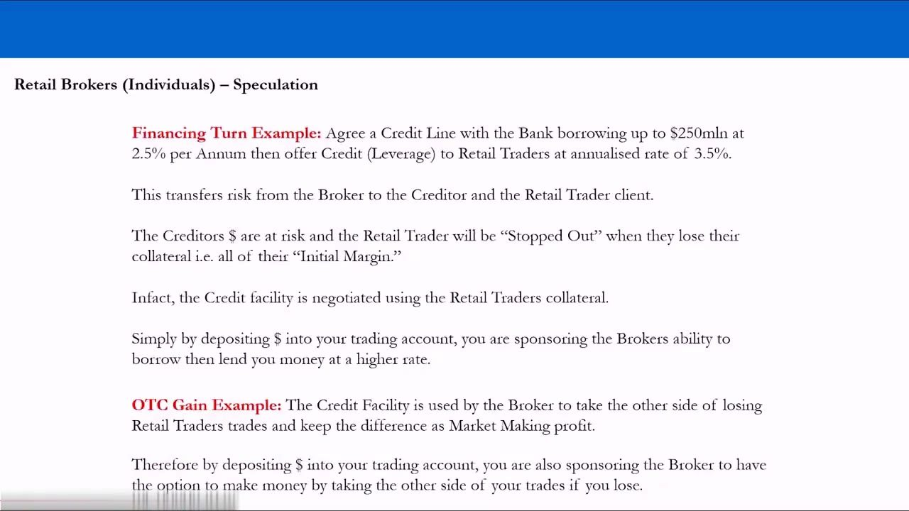
A-Book vs B-Book: trading against your own broker
- A software algorithm sorts clients: losing clients to the A-Book, winning clients to the B-Book, treated differently each day.
- A-Book (losing client, ~90%): the broker takes the other side with credit and runs the OTC position naked with no hedge, unwinding when the client does — broker makes the money.
- B-Book (winning client): the broker automatically hedges the position, committing double the capital for less profit.
- Either way the broker profits risk-free — but it makes far more from losers, so it wants you to lose.
Because ~90% of retail clients lose, taking the other side gives the broker a ~90% win ratio. This is the deepest conflict of interest: on the naked OTC book, you are literally trading against your own broker.
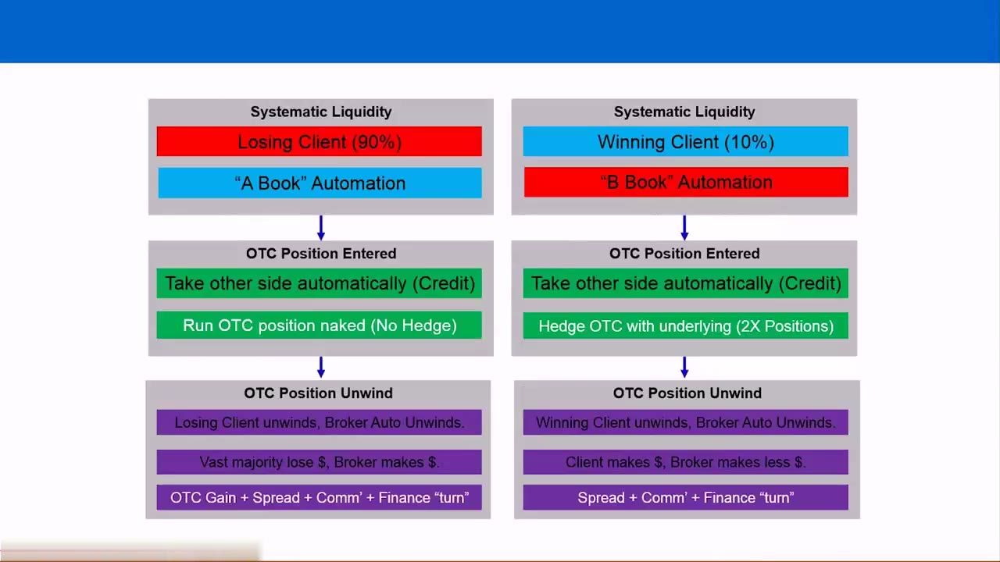
The five lies of the retail industry
- 1. Misleading information — 'strategies' that treat the market like an ATM you tap daily, calling it trading.
- 2. False advertising — pretending professionals day-trade the way brokers want you to; no pro day-trades unless volatility allows.
- 3. Turnkey free resources — a $5–10m platform given away free, like a slot machine placed in your home to hook you.
- 4. Misselling education — teaching you to push the buy/sell button (<1% of trading) and branding it 'education'; 5. Rebranding brokers as traders — 'chief market strategist' titles that are still just conflicted brokers.
Brokers spend 30–50% of the spread/commission they collect on marketing to protect the status quo. The whole front door of the industry is designed to make you trade the way that pays them, not you.
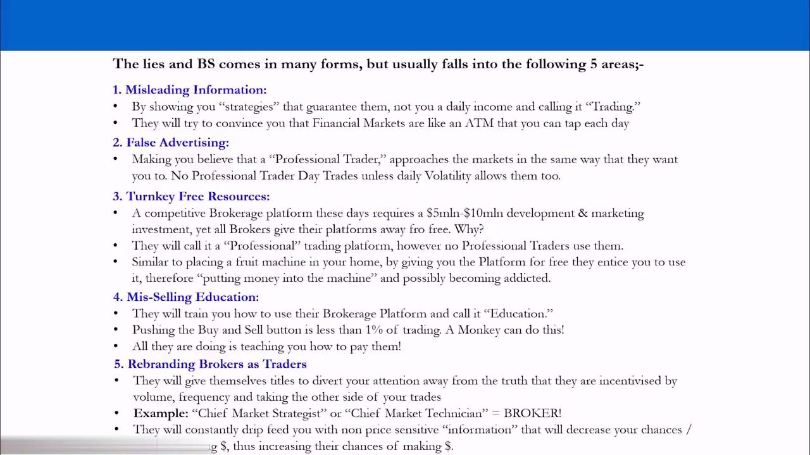
Central banks: direct intervention
- A central bank can't buy its own currency without first selling a foreign one, so it must accumulate foreign currency reserves.
- To support a weak currency it spends reserves buying its own; to weaken a strong currency it sells its own and accumulates reserves.
- The 1992 ERM crisis: the Bank of England had to keep sterling within ~2.5% either side of a Deutsche Mark peg set too high — a political fudge.
- Reserves ran dry, the pound broke through the lower band and was devalued; George Soros made over £1bn in one afternoon.
Fixed regimes have upper and lower bands the central bank must defend. The ERM shows speculation can beat a central bank when the peg is unsustainable — and it built up over months, not one day.
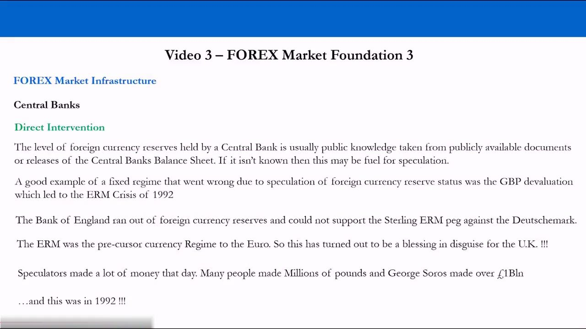
Money supply — the classic lever
- The most common money-supply measure is M2, and the money multiplier is most commonly calculated as M2/M0.
- Modern systems use fractional-reserve banking: every loan creates new money, making up the non-M0 components of M1–M3.
- Two money types: central bank money (M1–M3) and commercial bank money (M0–M3), governed by the reserve requirement ratio.
- Raising the rate of reserves is an injection to expand M2; slowing it is a withdrawal to control inflation.
A country's exchange rate is affected by the central bank's policy on the rate of growth of M2 — it becomes a big driver of whether a currency faces inflationary or deflationary conditions.
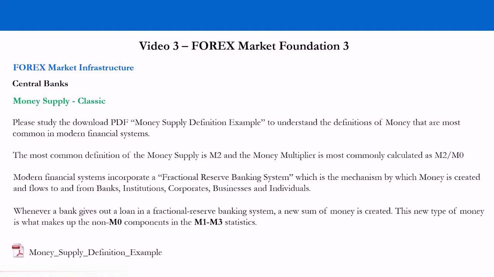
Quantitative easing — the non-classic lever
- QE is a non-classic policy used when classic tools (raising M2, cutting rates) have failed to stimulate the economy.
- The central bank buys specified financial assets — usually government bonds — raising their price and lowering yields.
- Typically short-term bonds first for a quick, liquid injection; QE is one-dimensional — a public commitment to be a buyer of bonds indefinitely.
- Deployed in the US, Japan and the eurozone; extending into long-term bonds can flatten the yield curve and signal deep stress — the last throw of the dice.
QE is an injection that risks a weaker exchange rate and can import inflation from abroad via cheaper exports. It's the final lever once rates are at zero and classic money-supply expansion fails.
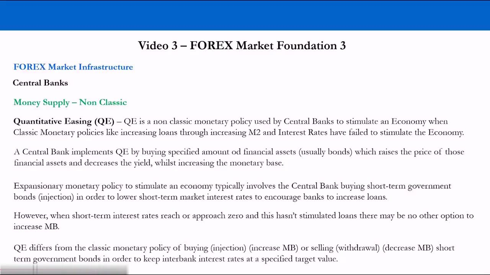
Interest rates: dovish, hawkish and the carry
- Rates are set in the interbank market: banks short of reserves borrow overnight from banks with excess, and the central bank intervenes there.
- Expansionary (dovish): buy short-term government bonds (injection) to lower rates and encourage lending; contractionary (hawkish): sell them (withdrawal) to raise rates.
- Falling rates discourage capital inflows, so the currency is sold and the exchange rate falls; rising rates attract capital seeking a higher risk-free rate, so the currency is bought and the rate rises.
- The interest-rate differential is what matters, forming the basis of the carry trade.
The risk-free rate is the return on low-risk investments like short-term government debt. What drives FX is the differential versus the rest of the world — the foundation of carry, a major fundamental driver.
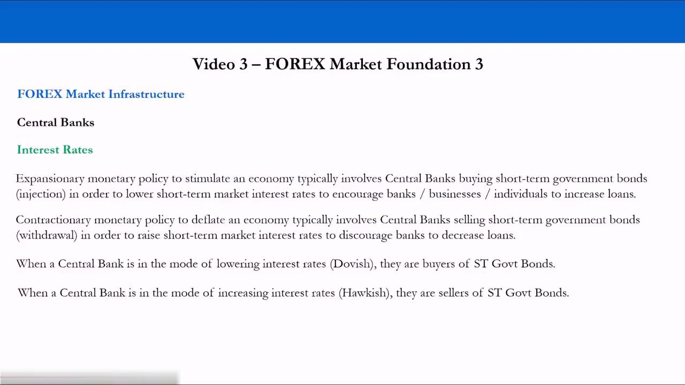
Governments: tariffs on imports and exports
- Import tariffs are an inflationary/protectionist measure: making foreign goods dearer lowers demand for the foreign currency, so it falls and the domestic currency rises.
- Export tariffs are a deflationary measure: making domestic goods dearer abroad lowers demand for the domestic currency, so it falls and trade partners' currencies rise.
- If the exchange rate self-adjusts by the same amount as the tariff, the net effect on trade is wiped out — leaving only a currency move.
- Developed nations tax both imports and exports, so the balance (ratio) between them is what matters for the exchange rate.
Protectionist strategies rarely work in the long run because exchange rates tend to adjust by the amount of the tax change, rendering the tariff meaningless — but the currency has still moved.
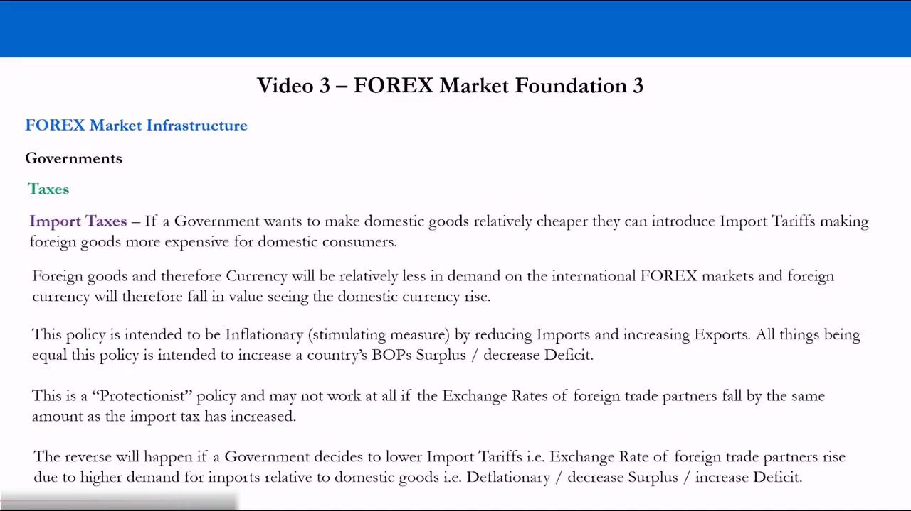
Smart money vs dumb money — the takeaway
- Non-speculative participants (corporates, pension funds, central banks, governments) drive the fundamental moves but are the minority of daily volume.
- Investment banks process this fundamental flow; hedge funds and IB prop desks speculate but on fundamental drivers over longer horizons.
- Retail and short-term speculation make up ~80% of daily transactions — the dumb money that falls into 90/90/90.
- The FX market is a mechanism transferring wealth from the dumb money to the smart money; aim to become the smart money.
The lesson: use the retail infrastructure to access the market, but do the opposite of what the broker wants — fundamentals, long/short, longer horizons. Learn first not to lose money; the upside opens once the downside is eliminated.
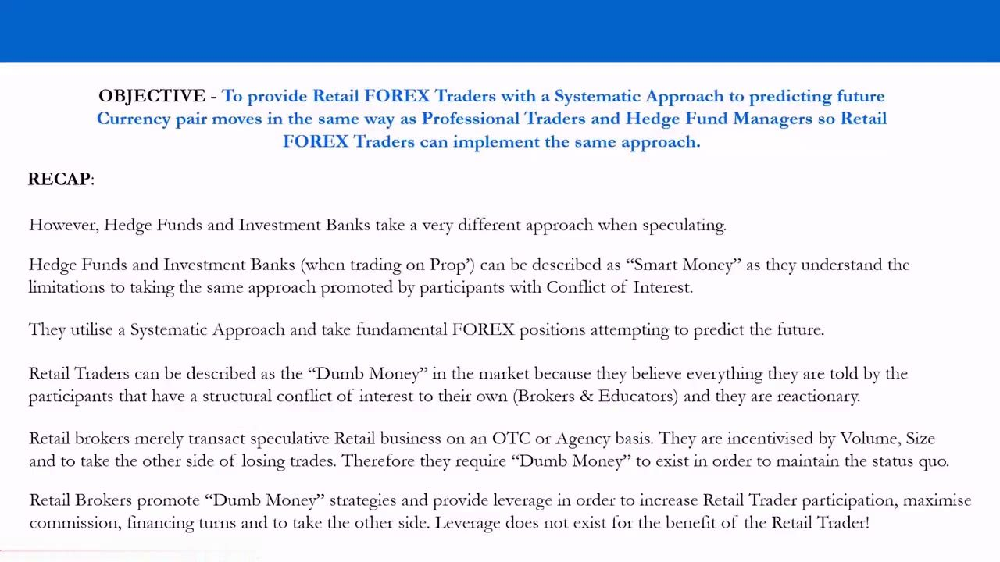
Glossary
- PipThe smallest standard price increment used to measure movement in a forex pair; liquid dollar-cross spreads at an investment bank can be as little as 1 pip.
- MarginCash deposited into a trading account as collateral to enable leveraged borrowing; split into initial (the deposit), variable (used against open positions) and utilised (the slice actually consumed by a move).
- LeverageBorrowing to control a position larger than your margin; 1% FX margin equals 100x leverage, so $1,000 controls a $100,000 position.
- CFD / Spread betA derivative contract that mirrors the underlying asset one-for-one; you trade the contract, not the asset. Banned in the US and Canada in 2010 for enabling over-leverage.
- Forward contractAn agreement to exchange currency at a set rate on a future date, used by corporates and funds to hedge FX exposure (e.g. a 1-year forward through a corporate margin account).
- A-Book / B-BookA broker's automated sorting: losing clients (A-Book) have their OTC positions run naked so the broker profits, while winning clients (B-Book) are hedged out.
- OTC gainProfit a broker makes by taking the other (over-the-counter) side of a client's losing trade using its credit line.
- Finance turnThe spread a broker keeps between the rate it borrows a credit line at (e.g. 2.5%) and the rate it lends leverage to clients at (e.g. 3.5%), funded by client collateral.
- 90/90/90The retail stat that 90% of retail traders lose 90% of their margin within 90 days; even higher in forex.
- M0 / M2Money-supply measures; M2 is the most common definition of the money supply and the money multiplier is commonly M2/M0.
- Money multiplierThe ratio (commonly M2/M0) describing how much broad money the banking system creates on top of base money via fractional-reserve lending.
- Fractional-reserve bankingThe system in which banks hold only a fraction of deposits as reserves and lend the rest, creating new money with each loan.
- Reserve requirement ratioThe minimum fraction of customer deposits a commercial bank must hold as reserves; central banks adjust the money supply by changing reserves.
- Quantitative easing (QE)A non-classic policy where a central bank publicly commits to buying bonds to inject liquidity when rate cuts and M2 expansion have failed.
- Dovish / HawkishDovish = a central bank lowering rates (buying short-term bonds, an injection); hawkish = raising rates (selling short-term bonds, a withdrawal).
- Carry tradeA strategy exploiting the interest-rate differential between currencies, earning the 'carry' by holding higher-yielding risk-free assets.
- Risk-free rateThe return on very low-risk investments such as short-term government debt or bank deposits; its cross-country differential drives FX flows.
- Agency vs risk basisAgency = the bank adds a commission/spread with no risk; risk = the bank takes the opposite position to provide liquidity, then trades out of it.
- ERM (1992)The Exchange Rate Mechanism, precursor to the euro; sterling's peg to the Deutsche Mark broke when the Bank of England ran out of reserves, and Soros made over £1bn.
- Smart money / Dumb moneySmart money = fundamentally-driven professionals and funds; dumb money = retail speculation on charts and reactions. The FX market transfers wealth from the latter to the former.